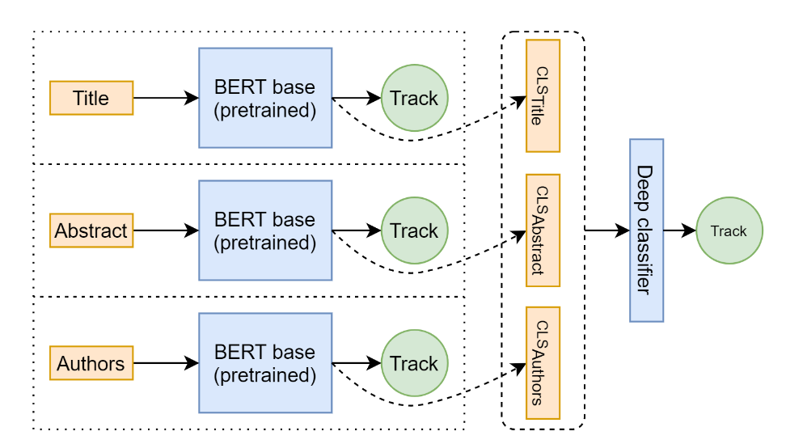
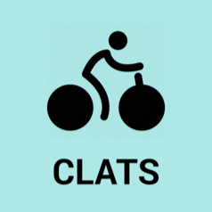

Hey!
I'm a graduate student in Computer Science, at the Manning College of Information & Computer Sciences, University of Massachusetts Amherst.I was previously a Research Fellow at Microsoft Research India, where I worked with Sonu Mehta, Dr. Ranjita Bhagwan, and Dr. Rahul Kumar in team Sankie. Here, I worked on source code processing to automatically classify and describe code edits in natural language, and on machine learning techniques which help prevent bugs and misconfiguration in large services.
Before this, I spent an amazing summer at the GREYC lab, University of Caen Normandy, France, where I worked with Prof. Gaël Dias, on analyzing the effects of gender information on the estimation of depression severity, using multimodal and multitask deep learning techniques.
I did my undergraduate thesis at the AI-NLP-ML lab, under Dr. Sriparna Saha and Dr. Mohammed Hasanuzzaman, on various multimodal and multi-task deep learning techniques to concurrently estimate depression severity and emotion intensity. I graduated with a B.Tech in Computer Science and Engineering from IIT Patna, Bihar, India, in 2019.
Experience

Research Fellow | Managers: Sonu Mehta, Dr. Ranjita Bhagwan, and Dr. Rahul Kumar
Selected Projects
|  |
Research Paper Tagger (RPT) code | pdf Advisor: Prof. Mohit Iyyer, UMass Amherst
Objective: Automatically tagging the research track of an NLP research article, given the title, abstract and the authors. |
|  |
Cycle Location and Anti Theft System (CLATS) code Advisor: Prof. Jimson Mathew, IIT Patna
Objective: Tracking and preventing the theft of bicycles inside gated regions. |
Publications
Gender-aware Estimation of Depression Severity Level in a Multimodal Setting
Arbaaz Qureshi, Gaël Dias, Sriparna Saha, Mohammed Hasanuzzaman
International Joint Conference on Neural Networks, 2021 (IJCNN, 2021)
website |
pdf |
code
Improving depression level estimation by concurrently learning emotion intensity
Arbaaz Qureshi, Gaël Dias, Sriparna Saha, Mohammed Hasanuzzaman
IEEE Computational Intelligence Magazine, 2020 (IEEE CIM, 2020)
website |
code
Multitask representation learning for multimodal estimation of depression level
Arbaaz Qureshi, Sriparna Saha, Gaël Dias, Mohammed Hasanuzzaman
IEEE Intelligent Systems, 2019 (IEEE IS, 2019)
website |
pdf |
code
Automatic Prediction of PHQ-8 Questionnaire Scores using Artificial Intelligence
Gaël Dias, Arbaaz Qureshi, Sriparna Saha, Mohammed Hasanuzzaman
French Journal of Psychiatry, 2019
website